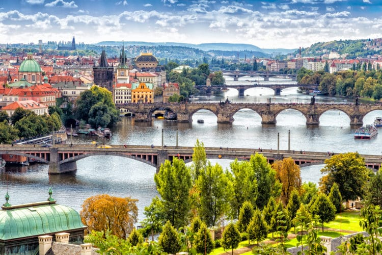
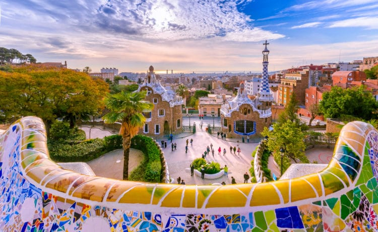
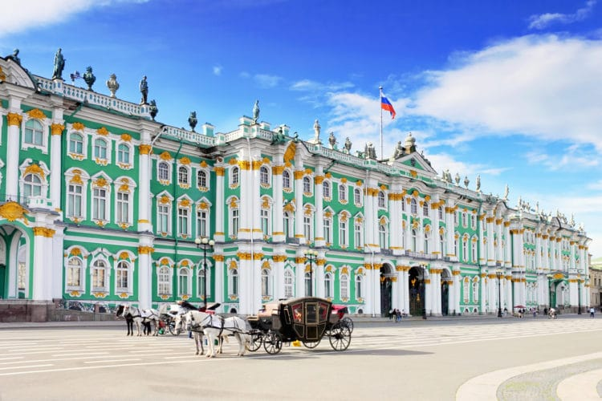
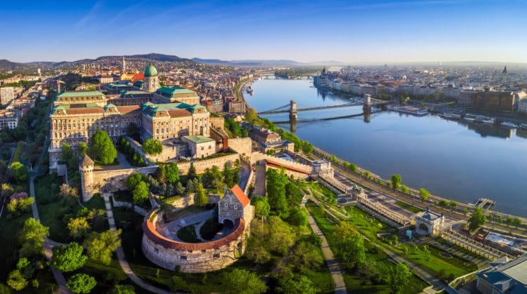
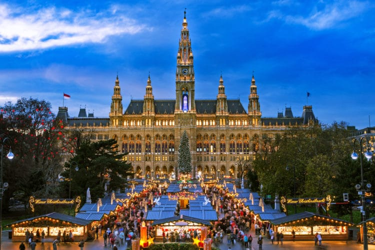
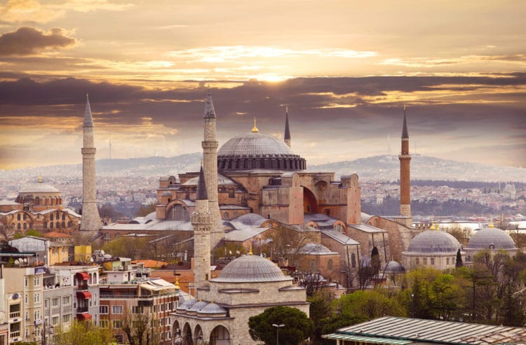
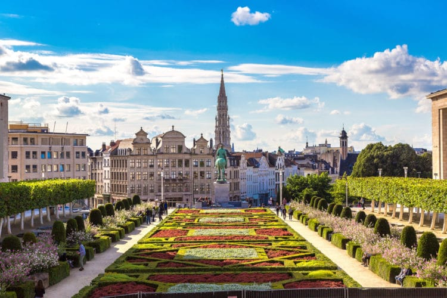
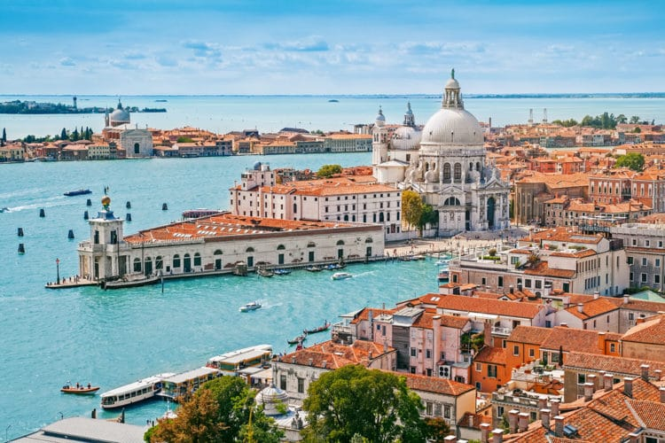

Ваш личный гид по 10 лучшим местам для посещения в Европе
Европа — часть света, буквально каждый метр которой пропитан многовековой историей и имеет свою неповторимую атмосферу. Любой путешественник хотел бы хоть однажды побывать в европейских городах, вдохновиться их красотой, ощутить их неуловимую магию, особый стиль жизни, пройтись по известным улочкам, посетить достопримечательности, чья история столь интересна и многогранна, что уже давно обросла легендами. Представляем вашему вниманию самые красивые города Европы — сводный рейтинг, который познакомит читателя с самыми яркими, уникальными и исторически ценными уголками континента.
1. Париж. Франция

Город-мечта, самый романтичный город в мире — в этих словах практически каждый узнает Париж. В элегантный, роскошный, самый посещаемый город в Европе ежегодно приезжает около 50 миллионов туристов! Неудивительно, ведь более чем 2000-летняя история французской столицы настолько бесценна, что изучать её, посещая памятные места, можно бесконечно. Речной круиз по Сене, пикник на зелёной лужайке у Эйфелевой башни, любование потрясающей готической архитектурой собора Парижской Богоматери — это лишь малая крупица тех целей, которые непременно стоит реализовать оказавшись в Париже.
2. Рим. Италия

Вечный город-символ, город-первоисточник — место зарождения Западной цивилизации. Именно здесь, на берегах реки Тибр, разворачивалась могущественная Римская Империя, которая впоследствии сыграла важнейшую роль в истории всех европейских государств. Начать знакомство с городом стоит с посещения самых ценных, ключевых достопримечательностей, ставших визиткой Рима: таких, как легендарная древнеримская арена Колизей, главный бастион католической церкви Ватикан, государственное сердце Древнего Рима — Римский форум, древние бани Каракаллы, многочисленные площади и великолепная барочная архитектура.
3. Прага. Чехия
Сказочная, мистическая, чарующая — такие эпитеты закрепились за волшебной чешской столицей. Дух Праги завораживает, и многие туристы, выбирая самые красивые города Европы, возвращаются на полюбившиеся мощёные улочки: любуются впечатляющей готической архитектурой, великолепными фасадами барокко и красными черепичными крышами, ставшими узнаваемым символом города. Речные путешествия по Влтаве, прогулка по Карловому мосту, знакомство с колдовской атмосферой готических замков и, конечно, возможность насладиться сытной чешской кухней — далеко не все возможности, доступные гостям Праги.
4. Барселона. Испания
Футбольный центр мира, столица Каталонии и одновременной самый чарующий город Испании — конечно, всё это Барселона. Основанный ещё в 3 веке до н.э., город имел непростую историю, вокруг него шла борьба за власть между римлянами, маврами и вестготами, а позже он перешёл к потомкам франкских королей. Бессмертные творения архитектуры Антонио Гауди, завораживающие готические фасады храмов и целый готический квартал, культовый футбольный стадион Камп Ноу, а также ряд ярких национальных фестивалей раскрывают всю суть города и его культуры.
5. Санкт-Петербург. Россия
Что касается России, то главным туристическим центром страны всегда был и остаётся царственный Санкт-Петербург. Завораживающие пейзажи набережной Невы, символичные разводные мосты, десятки музеев с ценнейшими историческими и художественными экспозициями, изящные дворцово-парковые комплексы с великолепными фонтанами — всё это в ритме танца уносит посетителя в атмосферу средневекового бала. Грандиозный дворцовый ансамбль Петергоф, Эрмитаж, Кунсткамера, Храм Спаса-на-Крови, Васильевский остров — все эти и другие памятные места будто бы вновь открывают страницы блистательной истории Российской империи.
6. Будапешт. Венгрия
Венгерская столица существует ещё со времён Римской Империи, демонстрируя высокий уровень развития в последние десятилетия. А когда-то в первом веке н.э. это был административный центр Аквинкум, который позже был переименован в Обуду. Позже он объединился с соседним поселением Пешт, и в средние века Будапешт стал одной из славных европейских столиц. С тех пор город сохранил величие имперского города, и сегодня здесь можно посетить массу исторических мест: например, неоготический венгерский парламент, замок Буда, базилика Св. Иштвана, оперный театр, музей изобразительных искусств.
7. Вена. Австрия
Ещё одно сокровище в плеяде европейских красавцев — старинный австрийский город Вена. Времена наибольшего расцвета Вена пережила в годы правления династии Габсбургов, которые собрали в своей столице величайшие образцы искусства, поэтому сегодня здесь можно встретить так много музеев, хранящих богатое культурное наследие страны. Великолепные дворцовые комплексы впечатляют вязью барочных фасадов, церковь Карлскирхе потрясает удивительным слиянием барокко, рококо и византийского стилей, а с Дунайской башни можно обозревать окрестные панорамы в радиусе до 80 километров.
8. Стамбул. Турция
Город на двух континентах, ставший местом встречи двух абсолютно разноплановых культур — азиатской и европейской, сохранил ценнейшее историческое наследие. Стамбул будто бы совмещает несовместимое: именно здесь соединяются два континента, и именно здесь проходит граница двух морей — Чёрного и Мраморного. При этом европейскую и азиатскую части города разделяет пролив Босфор, через который проложены мосты, так символично соединившие эти две части воедино. Главные украшения города — его прекрасные мечети, такие как Голубая мечеть и Сулеймание, Дворцово-парковые комплексы и великолепные мосты.
9. Брюссель. Бельгия
Бельгийская столица являет собой образец удивительного сочетания голландской практичности с французским изяществом. В джунглях городских кварталов нашлось место архитектурным памятникам разных стилей и эпох: холодной готике, пышному барокко, изящному ар-нуво и лаконичной современности. Первое, что приходит на ум при упоминании Брюсселя — знаменитый бельгийский шоколад, но более близкое знакомство с городом раскрывают его глубину и культурное богатство: в числе знаковых памятников — площадь Гранд-Плас, здание Ратуши, масса дворцов и готических храмов.
10. Венеция. Италия
20 самых красивых городов Европы завершает утончённая, романтичная, грациозная Венеция, город сотен каналов и мостов, где за великолепными фасадами соборов и дворцов прячутся тёмные и сырые кварталы, а вопреки тенденции к постепенному уходу города под воду, ловкие гондольеры продолжают катать любознательных туристов по узким извилинам каналов. И как и прежде, ещё десятки и сотни лет на главных площадях города, у готических соборов и венецианских дворцов будет не протолкнуться от желающих прикоснуться к легендарной истории итальянского города на воде. Какие города Европы самые красивые? Безусловно, однозначного ответа на этот вопрос не существует — каждый ждёт от путешествия по городам что-то своё: одних манит красота садово-парковых ландшафтов, другие ожидают раскрытия исторических тайн, третьих привлекает аутентичность старинных улочек. Подборка красивейших городов Европы позволяет среди этого многообразия найти что-то близкое для себя — города, путешествие в которые оставит яркий и памятный след в жизни.